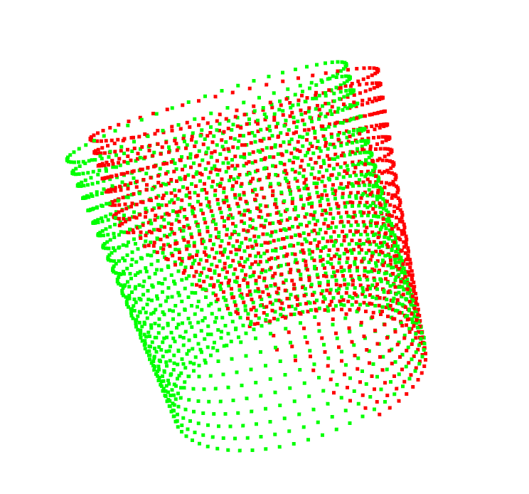
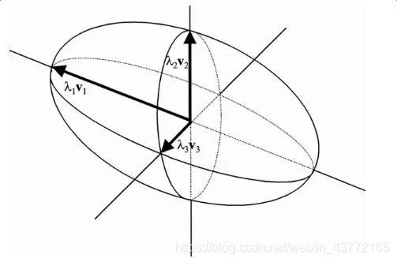

最近在搞点云重建圆柱体，通过ransac3d发现在点云部分缺失的情况下结果并不理想。但是其中有些知识点还是蛮有用的，算是复习了。

RANSAC 算法
随机采样一致性算法的核心流程：
- 随机取点；
- 根据采样点拟合一个空间方程；
- 判断所有在该方程附近点的数量；
- 循环1-3，直到发现一组点，其拟合的方程包含最多的点
RANSAC 可以排除掉离群的点，但既然是随机采样，那就可能出现不准确的问题。于是RANSAC 之后通过最小二乘法重新拟合一遍所有的接近的点就是一个比较好的方案。
然而在最小二乘法拟合圆柱方程时，需要给一个轴向的向量，在点云数据较为完整的情况下可以通过协方差矩阵求出。但是如果点云不完整，则会出现较大问题。
协方差矩阵
假设有以下数据：
| name |
height |
weight |
age |
| p1 |
179 |
74 |
33 |
| p2 |
187 |
80 |
31 |
| p3 |
175 |
71 |
28 |
| AVR |
180.3 |
75 |
30.7 |
则可计算方差：
σH2=n1i=1∑n(Hi−Hˉ)2,where n=3(1)
其中统计数据可以有很多个，所以n>=1。其他两个变量的方差计算方式相同，得到：
σHσWσAσH24.89σW14σA4.22(2)
上表中的横纵坐标只表示关系，不代表实际运算，虽然看起来像是乘法运算。
类似地，height和weight 之间也存在着某些关系：
σHσW=n1i=1∑n[(Hi−Hˉ)(Wi−Wˉ)],where n=3(3)
继续填入表（2）：
σHσWσAσH24.8918.74.4σW18.7143.3σA4.43.34.22(4)
表（4）就表示协方差矩阵。协方差矩阵是对称矩阵。
矩阵的特征向量与特征值
假设有
Av=λv(5)
我们就叫lambda 为矩阵A的特征值，v是与之对应的特征向量。一般来说，矩阵是多少维的，就会有多少对特征值和特征向量。
特征值和特征向量的求解步骤如下：
Av=λv→∣(A−λI)∣=0(6)
假设A=∣∣∣∣∣∣∣413122113∣∣∣∣∣∣∣，则有：
A−λI=∣∣∣∣∣∣∣4−λ1312−λ2113−λ∣∣∣∣∣∣∣(7)
行列式的值
行列式的几何意义：
- 缩放因数：行列式可以衡量一个线性变换对空间体积的缩放程度；
- 有向体积：行列式可以表示由矩阵向量张成的平行多面体的有向体积。
求解行列式的值：
- 高斯消元：复杂度O(n3) 更适合大规模运算
- 拉普拉斯展开：复杂度O(n!) 适合小规模矩阵，更直观
对于n×n 的行列式，可以以第i0行展开，其值为：
det(A)=j=1∑n(−1)i0+jai0jdet(Mij)(8)
之所以会出现正负系数，是因为行列式任意交换两行都会引起符号的变化。整体规律如下：
⎣⎢⎢⎢⎡+−+−−+−++−+−−+−+⎦⎥⎥⎥⎤
结合式(7)(8)进行运算，得到：
λ3−9λ2+20λ−12=0(9)
有理根定理
假设多项式方程所有系数都是整数，且存在有理根qp：
anxn+an−1xn−1+⋯+a0x0=0,where an=0,a0=0(10)
则p,q必须分别是a0,an的因子。
要求解式(9)，则可以逐个代入−12的所有因子，尝试λ=1,2发现满足后，可以待定系数法求出最后一个解λ=6。
由特征值求特征向量
由式(7)求特征向量，即是求方程组(A−λI)v=0的解。特征向量是两两正交的
协方差矩阵的特征向量
在主成份分析/PCA 中的意义，假设三维空间中所有的点存在于一个扁椭圆中：
- 最大特征值对应的特征向量对应该扁椭圆最长轴的方向；
- 第二大特征值对应的特征向量对应扁椭圆中与最长轴垂直的次长轴的方向；
- 第三大特征值对应的特征向量对应扁椭圆中同时与最长轴和次长轴垂直的轴的方向；
- 更高维度以此类推。。。

但是显而易见，如果采样数据不完整，有缺失，就会有很大的麻烦。
参考资料
- 2_数学基础_数据融合_协方差矩阵_状态空间方程_观测器问题 （06:30开始）
- 协方差矩阵的特征向量指的是什么
- 【深度学习数学基础 04】行列式与体积计算
- 特征值和特征向量